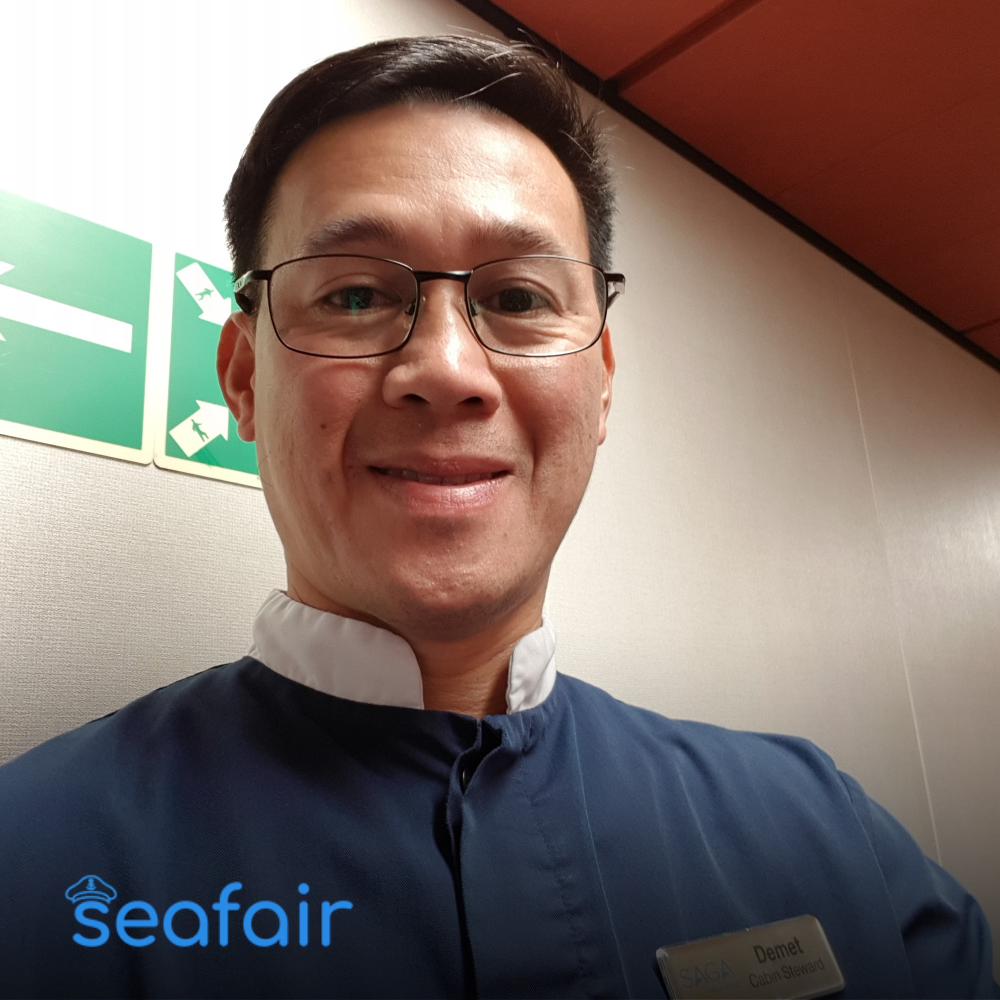

|

|
Demet Cayabyab
Philippines | Messman
It is Demet’s dream to be a seafarer, and he gets to be one as a cabin steward. With a dozen years of experience on board, Demet has many stories and destinations to tell of. Demet hopes to continue building up his array of experiences in order to someday become a supervisor and housekeeper on board.
In his experience, Demet’s favorite activity has been organizing fun events (like singing contests) for the crew in order to raise their morale. While Demet does not get to participate in the singing contests he organizes, we bet that he would always win.
Demet has also visited many ports across the globe: UK, France, New York City, Miami, Boston, New Orleans… The list goes on! However, he recognizes that the life of a seafarer is challenging, especially when faced with extended time away from family, loneliness, and bad weather like typhoons (Demet says it feels as if you were on a roller coaster). He appreciates his time with the crew and he looks forward to seeing his family at the conclusion of the trip.
Demet advises aspiring seafarers to pursue their passions because life is simply too short. Seafaring is a lot of excitement (and sometimes really good food). Speaking of food: Demet confirms that rice is a staple (even as a midnight snack), but he also surprised us by sharing that on a recent trip, his crew feasted on potatoes, meats, and wines for every month that they passed a test.
Cheers, Demet! Thanks for keeping so many crews strong and happy! We are excited to see where seafaring takes you next.
|